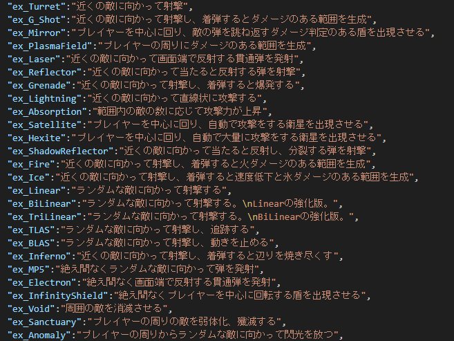

Simple_shooting_2.1
はじめに
昨年に続き、今年もSimple_shooting_2.1の開発を進めたので新しく実装した内容などについて書こうと思います。
↓ダウンロードリンク
そもそもSimple_shooting_2.1とは
概要
- 制作期間: 1年半
- 制作人数: 1人+kusa51(無職)
- ソースコード: それほど綺麗ではない
いきなり昨年に続きとか言われても分からない人が多いと思うので説明しておくと、Simple_shooting_2.1というゲームは、マウスとキーボードを駆使して敵を倒し、指定された時間生き残ることで現れるボスを倒すという内容のゲームになっています。
現在ふりーむ!の方ではWindows、GitHubではWindowsとLinux版がダウンロードできるのでぜひプレイしてみて下さい。

操作
W,A,S,Dか矢印キーで移動、マウスを押してマウスカーソルの方向に射撃というのが基本的な操作です。
コントローラーの場合、左スティックで移動します（PCゲームに慣れていない人はこっちがおすすめ）
射撃はキーボードでは左クリック、コントローラーでは右スティックです。
あと、実はTabキーでメイン武器の切り替えができたりします。
敵
現時点では約75体います。
「多くない?」という人もいるかもしれませんが、ステージは10個あって、そのステージごとに出現する敵の種類が全然違うので、言うほど多くありません。
ゲームシステム
Simple_shooting_2.1では武器とレベルというものがあり、敵を倒したときに出現する経験値を集め、レベルを上げることで新たな武器を手に入れたり持っている武器を強化したりすることで生き残るというものになっています。
スキル
敵を倒すとドロップする「経験値」。
 これを取り続けるとこんな画面になります。
これを取り続けるとこんな画面になります。
 これらがスキルと呼ばれるものです。
これらがスキルと呼ばれるものです。
スキルとは、いわゆる「第二の武器」で、四方八方からやってくる敵を倒してくれます。
通常射撃と違う点は、自動で攻撃する点。この自動射撃のおかげで序盤はしばらく自分で撃って倒す必要がなかったり、すごい時はスキルだけで敵を殲滅できて、撃たなくてもステージをクリアできます。そのくらい強いものとなっています。

残骸
実はこのゲームの敵は経験値のほかにもう一つアイテムをドロップします。下の画像の三角のやつです。
 これは「残骸（フラグメント）」と呼ばれるもので、経験値よりは活躍する場面が少ないですが、これもまたステージ攻略の手助けをしてくれます。
これは「残骸（フラグメント）」と呼ばれるもので、経験値よりは活躍する場面が少ないですが、これもまたステージ攻略の手助けをしてくれます。
残骸は一定数集めることで、攻撃力などのプレイヤー自身のステータスを強化できます。ただ、これがなくてもクリアできます。それでも残骸の恩恵を感じる場面はそこそこあると思います。
具体的にどんな強化ができるのかは実際にプレイして自分の目で確認してください‼
追加された要素
1.アーカイブ
倒した敵の挙動を確認できるアーカイブ機能を追加しました。
この機能は、元からあった敵の更新部分と描画部分を関数に切り分けて整理したら案外簡単に実装できました。
うれしい。
2.コマンド
ゲームにおいて、デバッグ作業というのは大変なものです。
ときに時間を早送りしたり、ときにレベルを上げたりというような作業が必要となることがあります。
そこで、コマンドというものが必要になってくるわけです。
なので、今回は、Antlrというライブラリを使ってコマンドを実装しました。
実装については後ほど。
3.ゲームパッド対応
日本においてはNindendo SwitchやPS4、PS5などのゲームパッドで操作するゲーム機がPCより普及しているとどこかで聞いた(要出典)ので、それらで使われるゲームパッドでの操作を実装しました。
4.ステージ追加
勿論新しいステージも去年から5個追加しているので遊んでみて下さい。
実装
アーカイブ
アーカイブは既存のGUIと画面遷移のシステムを活用して作り、敵の登録は撃破処理の中でアーカイブの中に存在しない場合に追加するという仕組みにしました。
コマンド
コマンドについては先ほど書いたようにAntlrというライブラリを使いました。
元々Antlrはコードエディターなどでのプログラムの構造の解析に使われているので、コマンドを実装するという用途には最適だと思っています。
Antlrでは、コマンドなどの構文を定義するためにlexerファイルとparserファイルが必要になります。
lexerファイルではコマンドなどで使う語句の宣言、parserファイルではlexerファイルで宣言した語句を使って構文を作成していきます。
構文一覧

構文が完成したら、構文から.jarファイルを作成し、それをゲームのプログラムに読み込ませることでコマンドの文字列から文法チェックや解析を行ってくれるようになります。
ゲームパッド
ゲームパッドの対応に関しては、Processingのライブラリの中にGameControlPlusというのものがあり、それを使うことで簡単にゲームパッドに対応できたのですが、プログラムを実行している途中にゲームパッドを抜き差しすると挿しなおしたときに認識してくれないという重大な欠陥がありました。
なので、自分で完全に作り直しました。
ついでにDUALSHOCKやXboxのコントローラーをある程度識別してそれぞれに最適なボタンの配置を設定するようにしました。
ステージ
前回から5つのステージを追加するにあたってどんどん難易度が高くなっていったので、救済措置としてアイテムを追加しました。
最後に
今年も例年のようにSimple_shootingシリーズを開発しました。
もしかしたら来年までにはStage15まで増えている…かも…?
#六甲学院物理部2023 でポスト